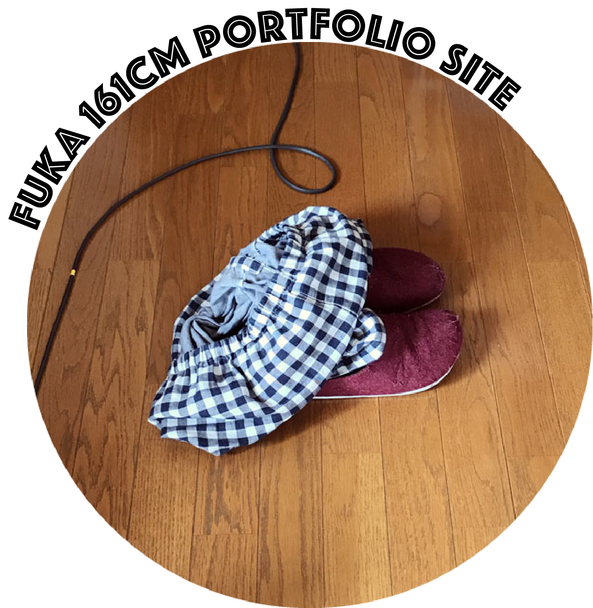

works
京都市で活動中のLala Okamoto様のアパレルブランドサイトを企画・制作しました。「ふだん着のチャイナ服」をコンセプトに掲げ、ユニセックス、フリーサイズのチャイナシャツを展開されています。
●「Look-Book」・・・身長、体型が異なる男女モデルの着用シーンを撮影。
●「Gallery」・・・商品の物撮写真を掲載。
- クライアント名
- Lala Okamoto
- 公開年月
- 2020年3月
- 担当範囲
- 企画/webデザイン/画像処理/コーディング

京都市右京区「NPO法人 子育ては親育て・みのりのもり劇場」様が発行するフリーペーパー『右京じかん』にて、レポーターとして約1年間活動しました。『右京・あいたい人』というコーナーで、取材依頼からライティング、誌面デザインまでを担当させていただきました。
- 発行元
- NPO法人 子育ては親育て・みのりのもり劇場
- 制作年
- 2014年
- 担当範囲
- 取材/撮影/誌面構成/ライティング/デザイン
京都市で活動中のロックバンド「モルグモルマルモ」様のロゴを制作しました。Webサイトや活動10周年記念グッズなどに使っていただいています。
- クライアント名
- モルグモルマルモ
- 制作年
- 2018年
- 担当範囲
- デザイン
about

fuka161cm
1991/5/3 広島市出身 京都市在住
京都嵯峨芸術大学芸術学部卒業